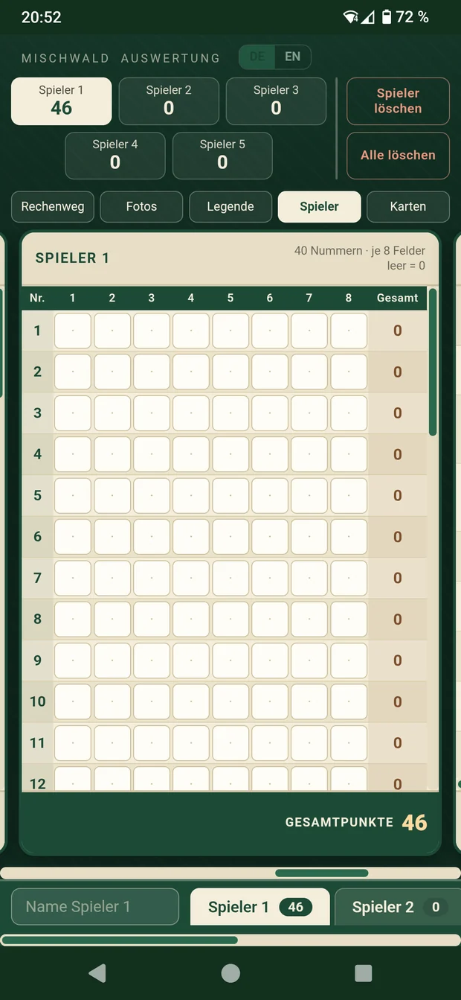
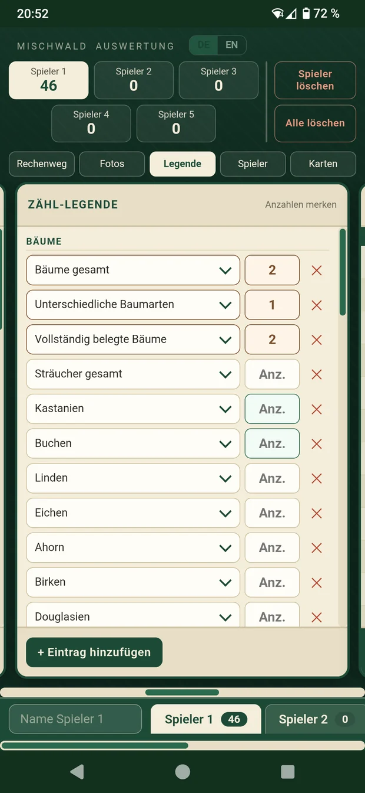
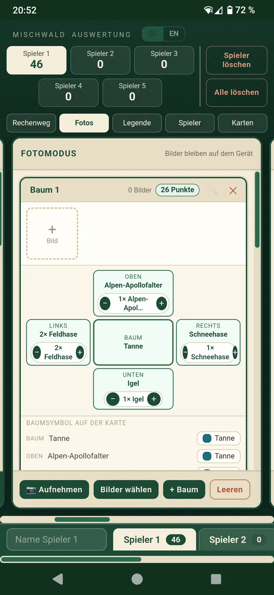
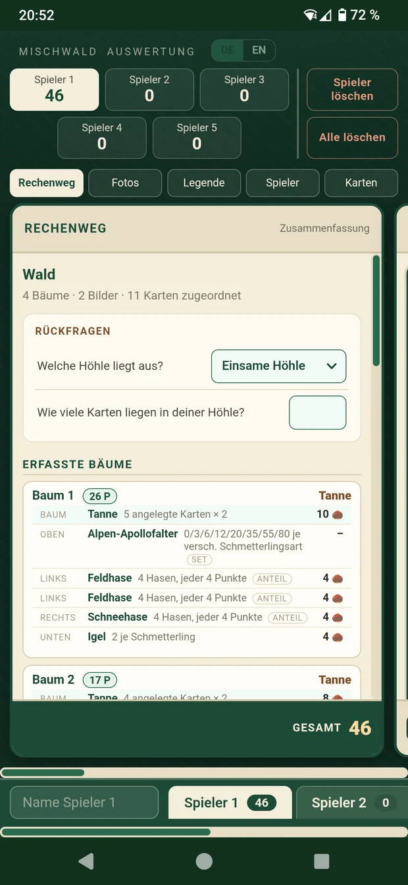
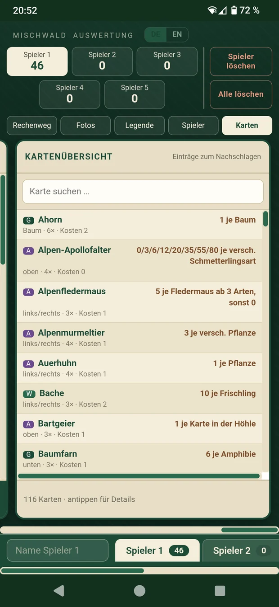

Brettspiel · Auswertung · Punkte
Finnvelo Mischwaldrechner
Web-App · zusätzlich als Android-AppDer Mischwaldrechner wertet eine Partie des Kartenspiels Mischwald aus: Punkte pro Spieler zusammenzählen, den Rechenweg nachvollziehen, den eigenen Wald abfotografieren und dabei die ausliegenden Karten automatisch erkennen lassen. Dazu eine Übersicht von 116 Karten zum Nachschlagen - direkt im Browser oder als App auf dem Handy.
Beschreibung
Die Auswertung ist bei Mischwald der zäheste Teil des Spielabends: Jede Kartenart bringt ihre eigenen Bedingungen mit, es fallen Zwischenrechnungen an, und das Ganze wiederholt sich für jede Mitspielerin und jeden Mitspieler. Genau dafür ist der Mischwaldrechner gemacht - eintragen statt rechnen.
Das Programm ist in fünf Bereiche aufgeteilt, zwischen denen sich am Handy seitlich wischen lässt. Es läuft ohne Installation direkt im Browser und steht zusätzlich als Android-App bereit, die auch ohne Internetverbindung am Spieltisch funktioniert. Die Oberfläche lässt sich zwischen Deutsch und Englisch umschalten.
Rechenweg statt Blackbox
Die Zusammenfassung zeigt nachvollziehbar, wie sich die Gesamtpunkte zusammensetzen - so lässt sich jede Zahl am Tisch überprüfen.
Wertungstabelle
40 Kartennummern mit je acht Feldern pro Spieler. Leere Felder zählen als null, die Summe steht sofort.
Karten per Foto erkennen
Den eigenen Wald abfotografieren - die Kartennamen werden per Texterkennung ausgelesen und den Bäumen zugeordnet. Mit Lupe zum Heranzoomen und Nachbessern von Hand.
Kartenübersicht mit Suche
116 Karten aus Grundspiel, Alpin, Waldrand und Entdeckungen zum Nachschlagen, jeweils mit der zugehörigen Punkteregel.
Zähl-Legende
Zwischenstände festhalten, etwa vollständig belegte Bäume oder unterschiedliche Baumarten, auch mit eigenen Einträgen.
Mehrere Spieler
Bis zu fünf Spieler mit eigenen Namen, jederzeit umschaltbar, mit Punktestand direkt in der Reiterleiste.
Oberfläche
Die Auswertung ist in fünf Bereiche aufgeteilt, zwischen denen sich am Handy seitlich wischen lässt. Die folgenden Ansichten zeigen das Programm im Einsatz.





Tutorial-Video
Hier kann später ein kurzes Video ergänzt werden, das die Auswertung einer Partie Schritt für Schritt zeigt.
Besondere Vorteile
- Kostenlos, ohne Anmeldung und ohne Konto.
- Läuft im Browser auf Handy, Tablet und Rechner.
- Als Android-App auch ohne Internetverbindung nutzbar - die Texterkennung ist mit eingebaut.
- Deckt Grundspiel und alle drei Erweiterungen ab.
- Alle Eingaben und Fotos bleiben auf dem eigenen Gerät.
Zielgruppe
Der Mischwaldrechner richtet sich an alle, die Mischwald regelmäßig spielen und die Schlussauswertung abkürzen möchten - besonders in größeren Runden, in denen sich das Zusammenzählen sonst lange hinzieht.
Wichtig zu wissen: Es wird nichts gespeichert. Eingaben und Fotos bleiben nur erhalten, solange die Seite beziehungsweise die App geöffnet ist. Eine Partie sollte also am Stück ausgewertet werden.
Nutzen und herunterladen
Direkt im Browser
Ohne Installation sofort loslegen - auf dem Handy, Tablet oder am Rechner.
Auswertung jetzt öffnenAndroid-App
Dieselbe Auswertung als App fürs Handy, praktisch am Spieltisch: Sie läuft ohne Internetverbindung, weil die Texterkennung samt Sprachdaten mit im Paket steckt. Die Kamera-Berechtigung wird für den Fotomodus benötigt.
Da die App nicht über den Play Store verteilt wird, muss Android beim Öffnen der Datei einmalig die Installation aus unbekannter Quelle erlauben.
Android-App herunterladen (11 MB)